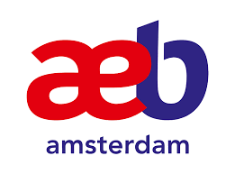
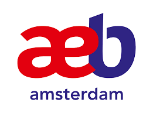

Uit behoefte voor een gespecialiseerde brandweer voor de haven en de industrie is in 2020 de Gezamenlijke Brandweer Amsterdam (GBA) opgericht.
Dit is gebeurd in samenwerking met 3 partijen: Port of Amsterdam, lid-bedrijven en de veiligheidsregio Amsterdam Amstelland. Deze partijen zijn onderverdeeld in de coöperatie GBA en de kosten worden evenredig door deze drie partijen gedeeld. Dit maakt de GBA een publiek private samenwerking.
Allen zijn gespecialiseerd en opgeleid voor industrie, scheepsbrandbestrijding en hoogte- en diepte reddingen. Iedere ploeg bestaat uit 6 incidentbestrijders die werken in een 9/15 rooster waarmee wij 24/7 klaar staan met een autospuit en een industrieel blusvoertuig. Tijdens de diensten heeft al het personeel een eigen koude (administratieve) taak in onze zelfsturende organisatie en zorgen wij zelf voor een goed functionerende GBA. Inmiddels bestaan we 5 jaar en blijven wij onszelf verbeteren om nog vele jaren voor een veilige haven te kunnen zorgen.

Alle bedrijven in de haven hebben de mogelijkheid om lid te worden van de coöperatie GBA, dit is onafhankelijk van het type bedrijf en of er wel of geen brandweeraanwijzing vanuit de overheid is opgelegd.
Met dit lidmaatschap helpen wij bedrijven met diverse zaken, onder andere:
Afhankelijk van het lidmaatschap oriënteren en oefenen we een bepaald aantal momenten bij onze lid-bedrijven. Door deze momenten raken wij bekend met het bedrijf, maar raakt het bedrijf ook bekend met de GBA en onze handelswijze. Op deze manier raken wij op elkaar ingespeeld en kunnen we incidenten sneller en efficiënter bestrijden. Hierbij raken bedrijfsprocessen zo min mogelijk verstoord en blijft de imago schade voor het lid-bedrijf beperkt. Inmiddels is de coöperatie GBA bijna verdrievoudigd omdat steeds meer bedrijven de waarde zien van de GBA. Mocht u net zo enthousiast zijn geworden, neem dan contact met ons op via de contact pagina. Wij zijn altijd gedreven om onze meerwaarde in een persoonlijk gesprek toe te lichten en uw bedrijf kennis te laten maken met de GBA!
Contact opnemens 


Vanuit de GBA hebben wij ieder jaar nieuwe doelstellingen. Deze verwerken we in ons jaarplan, op deze manier maken we voor iedereen inzichtelijk waar wij onszelf naartoe willen ontwikkelen...